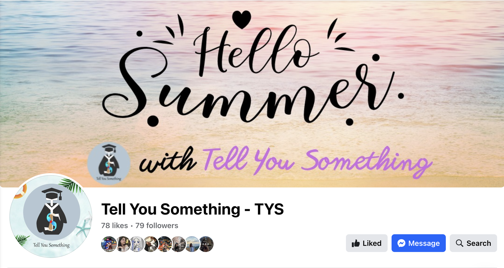
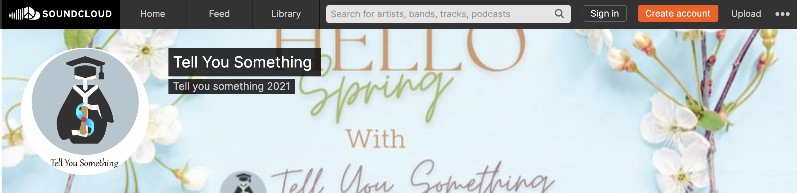

In high school, I launched a project with friends, creating monthly podcasts and bi-weekly newspapers on Facebook focusing on studying abroad experiences and tips. We began by brainstorming podcast content, leveraging the insights of a team member studying abroad. My responsibilities included recording the podcast voice, assembling audio tracks, and designing visual elements like image posts, cover images, and logos. To add a seasonal flair, I incorporated thematic elements into the logo and cover image for each season, creating a festive vibe on our page.
"Tell You Something" Homepage

"Tell You Something" Soundcloud page
